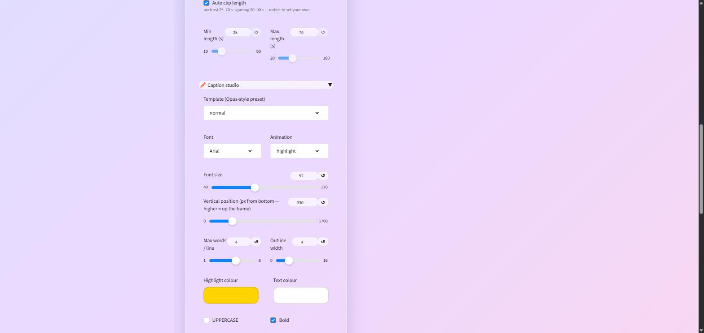

Key features
01 Seven-stage local pipeline
Download → transcribe → select → review → reframe → caption → export. Every stage caches to disk keyed by a fast fingerprint of the input video, so re-runs skip completed work. Transcription, clip selection and encoding are all local: faster-whisper or whisper.cpp, a model served by LM Studio, and system ffmpeg.
02 Two ways of finding a good moment
For podcasts, a local LLM scores the transcript — chunked to fit the model's context, with JSON repair and retries, then snapped to word boundaries. For gaming VODs the transcript says nothing useful, so it fuses audio loudness with speech excitement (laughter, shouting, word-rate bursts) into a moment curve and cuts on speech lulls instead. Auto mode probes the video and picks.
03 Review before export
Selection returns top picks plus unticked alternates as raw 480p previews — no captions, no reframing yet. Trim or widen each clip, read its transcript, keep or drop it. Only then does the expensive rendering run, and only on what you kept.
04 Auto-reframe to 9:16
MediaPipe face detection samples the clip and builds an EMA-smoothed crop track before any frame is written, so the crop doesn't jitter; it falls back to a centre crop when no face is visible. Gaming clips get a facecam-aware layout instead — the webcam stacked over the gameplay, detected by spatially clustering faces from the full frame plus four upscaled corners.
05 Caption studio
Seven Opus-style presets across seven animation modes, generated as ASS subtitles and burned in with ffmpeg. Font, size, position, colours and words-per-line are all overridable, with a single burned frame as a live preview.

06 CPU or AMD GPU
One switch swaps both ends of the pipeline: faster-whisper to whisper.cpp on Vulkan, and libx264 to AMD's hardware h264_amf encoder. Deliberately AMD rather than CUDA, since that's the GPU in the machine.
07 Three interfaces, one pipeline
A native desktop window (Gradio in pywebview, launched by a thin PyInstaller stub), a browser UI, and a one-shot CLI — all sharing the same code and the same cache.
In short
Cutting shorts out of long videos is the most repetitive job in running a channel, and every tool that does it wants your unreleased footage on their server. Everything needed to do it locally already exists, so this wires it together. The decision that made it usable was where to put the human: the first version was fully automatic and the output wasn't good enough, so the pipeline splits in half and a person reviews cheap 480p cuts before anything gets reframed or encoded.